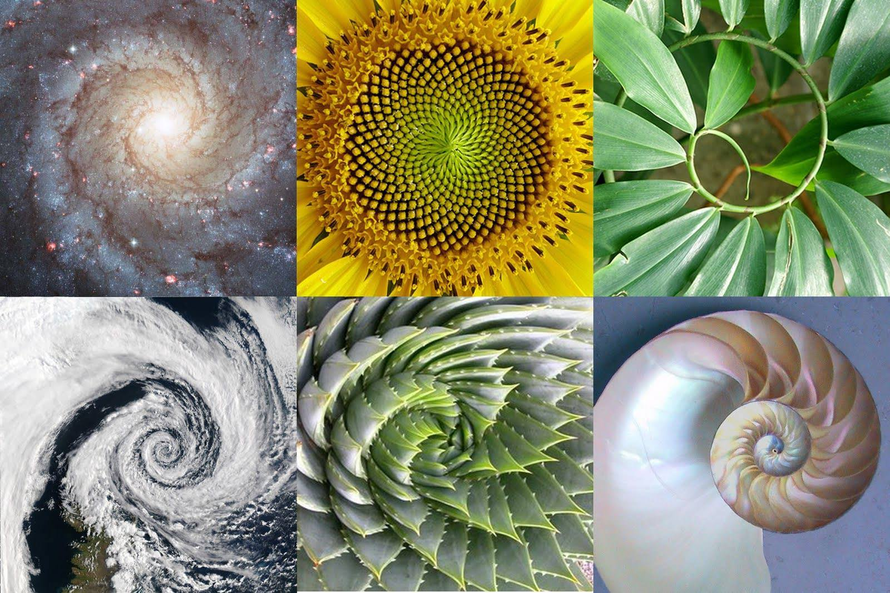

Nature expresses itself through complex geometric shapes, wonderful symmetries and enigmatic behaviours. Humans admire her wonders and try to explain them using math. If you look at the night sky through a telescope, you can realize that we are surrounded, in all directions, by billions of "tiny" and faint objects: galaxies. Now look at their shapes. Are they familiar? Spirals are the most common shape in Nature and we can find them both at the cosmic scale and in the microscopic world, each with their unique, fascinating reason.
How disk galaxies form their spiral arms have been puzzling astronomers and astrophysicists for almost as long as they have been observing them. Nowadays we still don't know a mathematical model that describes the galaxies rotation, the classical Newtonian model doesn't works but scientists have been proposed various hypothesis, one of the most common is the density wave theory in which stars and gas behave like cars in traffic jam. The cars move through the traffic jam: the density of cars increases in the middle of it. The traffic jam itself, however, does't move or not a great deal in comparison to the cars. In the galaxy, stars, gas, dust, and other components move through a density wave, are compressed, and then move out of it.
At smaller scales we can find similar shapes from tropical cyclones (a phenomenon in correlation with the Coriolis Effect), plants, snail shells, DNA to the approach of a hawk to its prey or the approach of an insect to a light source. Usually plants like sunflowers display an approximation of logarithmic spirals: the Fibonacci spiral. Plants have made use of spirals in order to ensure that its leaves have the maximum exposure to light or to ensure maximum seed arrangement.
In the microscopic world, the DNA is the spiral for excellence and behind its shape there are a lot of interesting reasons. DNA has three parts: sugar, phosphates and basis. All these parts need to be water soluble (or hydrophilic) but the basis hate water (they are hydrophobic) and DNA is actually submerged in water molecules, inside a cell. How are these hydrophobic bases going to exist in a cell? Well, they become water soluble once they attach to a sugar and a phosphate to create a nucleotide, and to avoid water, the basis have to stack themselves in a chain. But there are still spaces between basis through which water can sneak in. One intelligent way to cover up this spaces is to bring in another chain to cover it up forming a straight ladder. This is why DNA is a double chain. But there are still some holes in this structure and skewing the ladder to one side fills the holes but makes a new problem: in this arrangement, neighbouring atoms bump into each other. To avoid bumping into each other, the staircase has to twist a little bit. Et voilà! A wonderful double helix appears.
These examples are just a small part of the great, intricate and unknown immensity of the universe. We still have a lot to explain and just as much to discover.